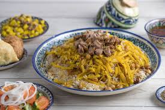

<!DOCTYPE html>
<html lang="en">
    <head>
        <meta charset="utf-8">
        <title>Palov</title>
    </head>
</html>
<body>
    <h1>Palov Recipe</h1>
    
    
    <h2><em>Description</em></h2>
        <p>Palov is the most famous national cuisine of Uzbekistan that is loved and eaten most by Uzbek people</p>
        
        <h3>Ingredients</h3>
        <ul>
            <li>Rice</li>
            <li>Vegetable oil</li>
            <li>Onions</li>
            <li>Carrots</li>
            <li>Lamb or Beef</li>
        </ul>

        <h3>Steps</h3>
        <ol>
            <li>Rinse rice well and drain, set aside.</li>
            <li>In a separate pot, heat about 2½ quarts of water to a simmer while preparing the other ingredients.</li>
            <li>Heat oil in a large (at least 8-quart) pot and cook onions 10-15 minutes, stirring regularly, until they turn golden.</li>
            <li>Add meat and stir until browned.</li>
            <li>Add carrots, salt, and spices. Stir well, and continue cooking for several minutes.</li>
            <li>Add rice in an even layer on top of the other ingredients. Add more hot water, pouring slowly over the back of a skimmer to avoid stirring the rice up too much. The water level should be about 1 centimeter above the rice.</li>
        </ol>
    </body>
</html>
</body>
